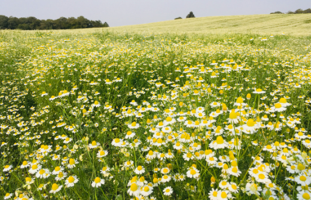

Curiosidades da Fotografia
Aqui iremos demonstrar as mais diversas paisagens, desde cidades urbanas a lugares quase inexplorados ou imaculados pelo ser humano .
Trânsito diário
Parque em Ohio
Ponte com reflexão circular
Campo florido

Campo com flrores roxas